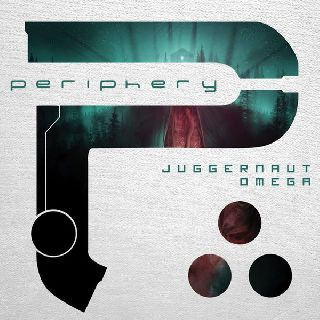

Periphery é uma banda americana de metal progressivo formada em Washington,
D.C., em 2005. Seu estilo musical foi descrito como metal progressivo, djent,
e metalcore progressivo.
Eles são considerados um dos pioneiros do movimento djent dentro do metal progressivo.
Eles também receberam uma indicação ao Grammy.
A banda é composta pelo vocalista Spencer Sotelo, guitarristas Misha Mansoor, Mark Holcomb,
Jake Bowen e o baterista Matt Halpern.
Desde sua estreia autointitulado, a banda lançou mais seis álbuns: Periphery II: This Time It's Personal,
o álbum duplo Juggernaut: Alpha and Omega, Periphery III: Select Difficulty,
Periphery IV: Hail Stan e Periphery V: Djent Is Not a Genre.
Eles também lançaram dois EPs: Icarus EP e Clear. Todo o material da Periferia é autoproduzido pelos membros
da banda.

Membros:
- Matt Halpern
- Misha Mansor
- Jake Bowen - Spencer Sotelo - Mark Holcomb
Periphery
- Matt Halpern
- Misha Mansor
- Jake Bowen - Spencer Sotelo - Mark Holcomb